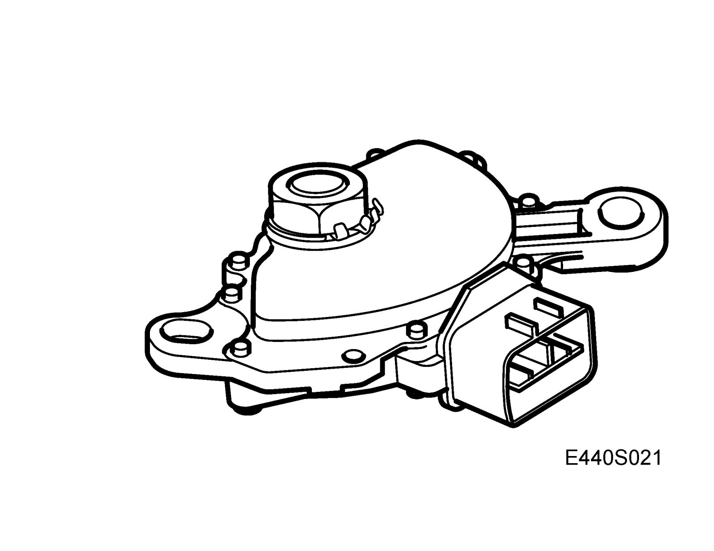
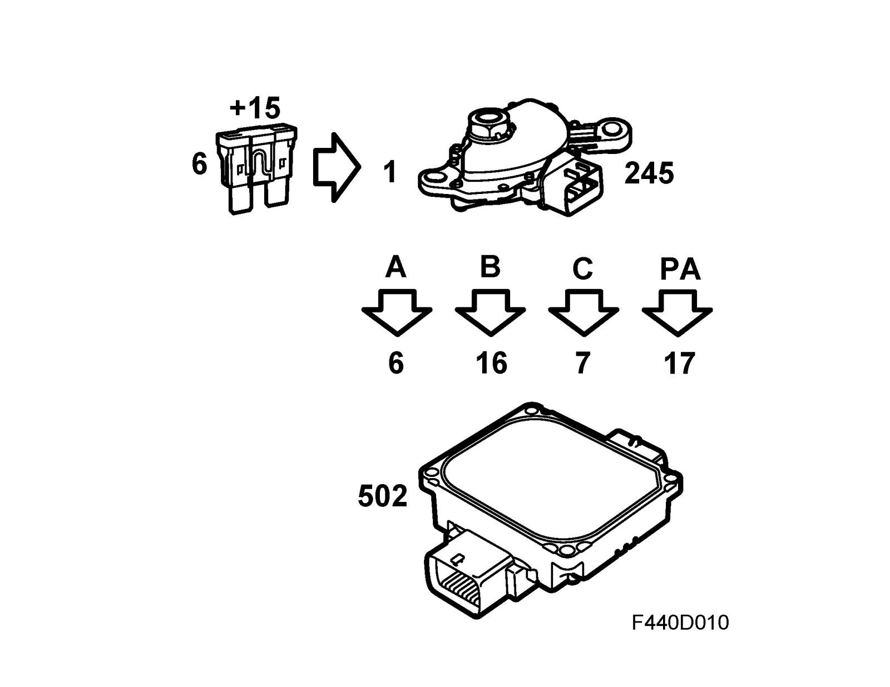
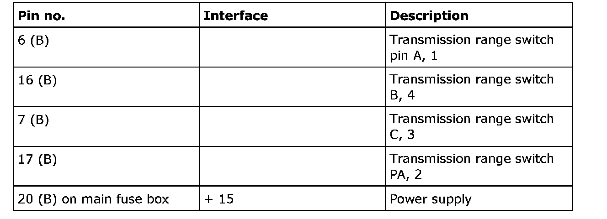
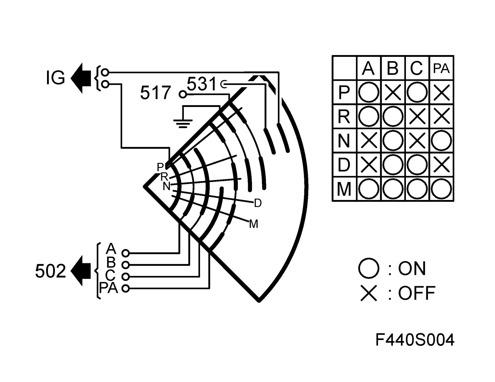
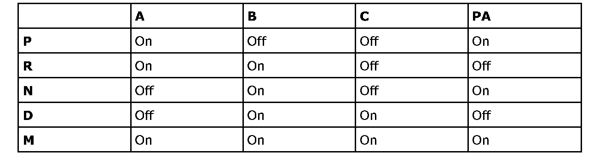
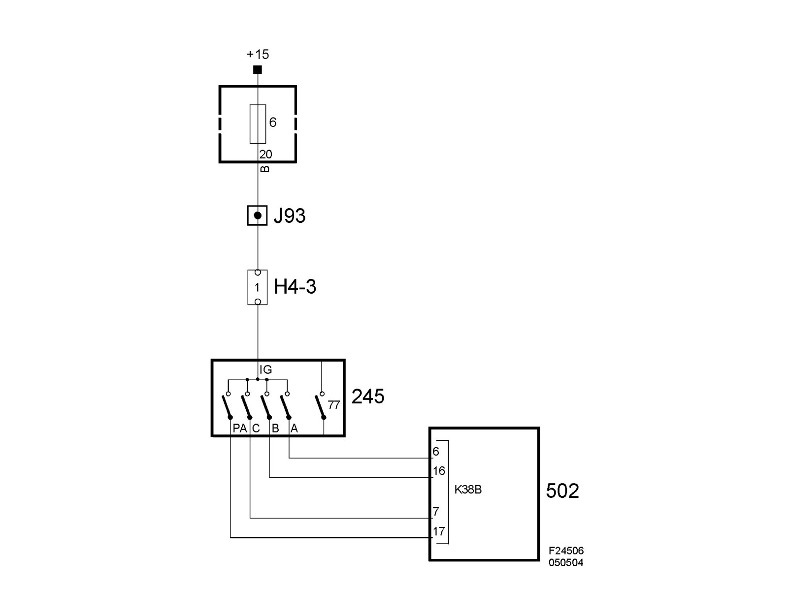
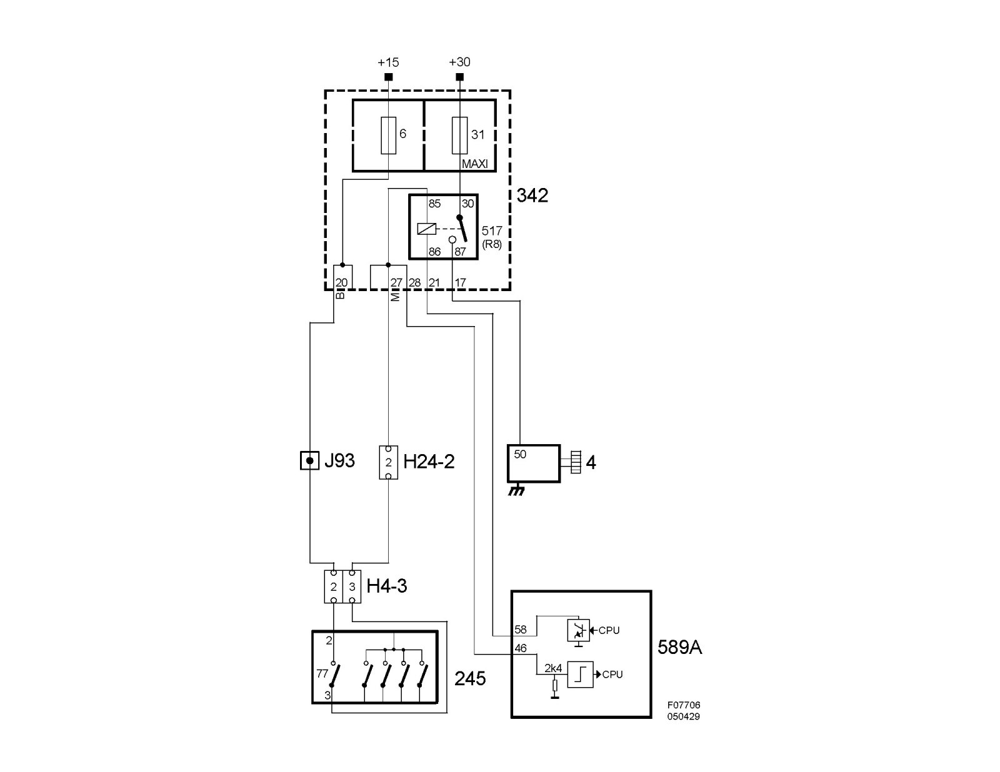

Transmission Position Sensor/Switch: Description and Operation
Transmission range switch, automatic (245)Location
Transmission range switch, automatic (245)

Main use
To inform the control module of the engaged gear and via an internal reverse light switch initiate turning on the reversing light and via an integrated starter motor interlock switch to block the starting function.
Type
Mechanical position switch.
Activation
The transmission range switch is a position switch that is powered via +15 from fuse 6 in Rear electric center 342. A number of slip contacts provide the current to the sensor outputs. A combination of terminals A, B, C and PA provide the current selector lever position (see table). The slip contacts can be either closed (ON) or open (OFF).




To ensure the control module receives the correct information, it is essential the sensor be adjusted correctly. Special tool 87 92 467 Adjustment tool, gear selector position sensor must be used when adjusting.
Connecting the gear selector position sensor

Connecting the starter motor interlock switch
